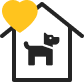
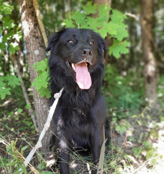
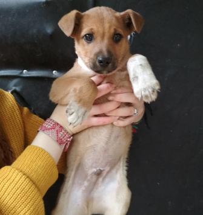
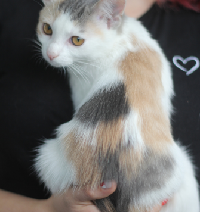

Тут большие добрые сердца помогают жить маленьким сердечкам
Ежедневно в пункт временного содержания, путём отлова, попадают безнадзорные собаки и коты. По закону, у животных находящихся в САХе есть всего лишь несколько дней, чтобы найти прежнего или обрести нового хозяина. В противном случае невостребованных животных ждёт УСЫПЛЕНИЕ! Здесь вы сможете найти своего как потерявшегося, так и нового верного друга!
Если нет возможности забрать хвостика, вы можете помочь нам финансово или другой материальной помощью. Еще нам всегда нужны добрые и отзывчивые люди - волонтеры, без вас очень трудно!
Как помочь?

Дать хвостику дом или взять на передержку
Перечислить деньги в фонд помощи
Привезти корм, лекарства или другие вещи
Доставить животным еду или отвезти в больницу
Выгуливать, кормить, мыть или лечить хвостиков
Дом и любовь для хвостика
Самая большая помощь - это спасти жизнь животному, забрать домой, или помочь хвостику с поиском дома. У наших подопечных очень мало времени. Рассказывайте друзья и и знакомым о наших хвостиках, возможно кому-то нужен будет именно такой друг.
Передержка
Когда животных ждет скорое усыпление, очень важно найти ему дом. Но пока дом и новые или старые хозяева разыскиваются, хвостику нужно где-то жить. Вы можете забрать к себе домой животных на время. Волонтеры, в свою очередь, обязательно помогут с поиском нового дома.
Наши подопечные
Посмотреть всех (157)

Блэки
Мальчик, 7 месяцев
Веселый и очень игривый, ему так нужны ваша любовь и ласка.У него потрясающая густая шерсть.
Подробнее

Моник
Мальчик, 7 месяцев
К поводку приучен. Не агрессивный. В еде не привередничает. С другими животными не конфликтует. Привит.
Подробнее

Блэки
Девочка, 1 год
Очень ласковая мяукалка. Хочет домой.
Подробнее
Финансовая поддержка
Такая помощь необходима для оплаты стерилизации, прививок, лечения больных животных, покупка корма и других жизненно необходимых вещей.
Расчетный счет в Банке
БООЗЖ "СПАСИ ЖИЗНЬ"
УНП: 590375680
Текущий (расчетный) счет в BYN:
BY13ALFA30152555460010270000
ЗАО 'Альфа-Банк'
БИК: ALFABY2X
Коробочки в городе
Наши коробочки для пожертвований в г. Гродно:
1. Зоомаркет «Зообазар», ул. Комарова, 26а;
2. Учебный корпус ГГАУ, ул. Волковича, 1;
3. Парикмахерская «ПРИМАДОННА», ул. Гоголя, 11;
4. Зоомаркет «Зообазар» ул. Пушкина, 31а;
5. Гипермаркет «Евроопт», ул. Тимирязева, 8;
6. Гипермаркет «Евроопт», ул. Янки Купалы, 82А;
7. Фитнес-центр «АДРЕНАЛИН», ул. Подольная, д.37.
Посмотреть на карте